Integrating Felix with Eclipse
This document explains how to launch Felix inside the Eclipse IDE. Then, it is possible to use Eclipse debugging facilities to debug bundles.
Preliminaries
To integrate Felix inside Eclipse, you need Felix, Eclipse and nothing else.
Installing Eclipse
First, you need Eclipse. To download the Eclipse IDE, go to:http://www.eclipse.org/downloads/. This tutorial works for Eclipse 3.X.X, but may works on older version.
Creation of the Felix binaries
To integrate Felix inside Eclipse, you have three possibilities
- Using Pax Cursor to launch easily any supported OSGi framework inside Eclipse.
- Integrating the Felix release as a Java project
- Integrating the Felix trunk (latest version) as a Java project
Using Pax Cursor
Pax Cursor is an Eclipse Plugin that adds Eclipse launch configurations for all platforms / versions supported by Pax Runner.
Usign the Felix release as a Java Project
Once, Eclipse is installed, you need to download Felix. You will find this Felix release on http://felix.apache.org/site/downloads.cgi. Choose a binary release in your preferred archive format. Then, unzip the release in a temporary folder. We will copy the files elsewhere later.
Building and Using the Felix Trunk
If you want to use the Felix trunk, follows the instructions to checkout and build it. The Felix binaries are created in the main project. We will copy the files elsewhere later.
Installing Felix
The integration uses a Java project. This project will contain Felix. This section explains how-to create the new project, how-to copy the Felix release inside the project and finally, how-to configure it.
Creation of the Felix Java project
First, launch Eclipse, and select your preferred workspace. The integration will be attached to this workspace.
Then, click on File -> New -> Project... as depicts on the Figure 1.
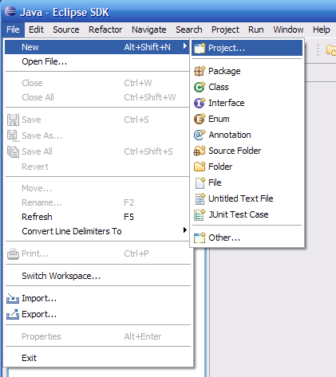
Figure 1: Creation of a new project
This action will launch the project creation wizard. Select Java project (Figure 2), and click on "Next".
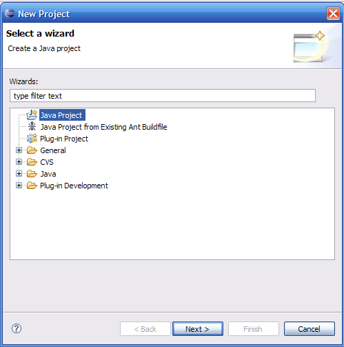
Figure 2: Selection of the project type
Enter the project name (Felix for example). Select the "create separate source and output folders" option (if not already selected). These actions are depicted on the Figure 3. Then click on "Next".
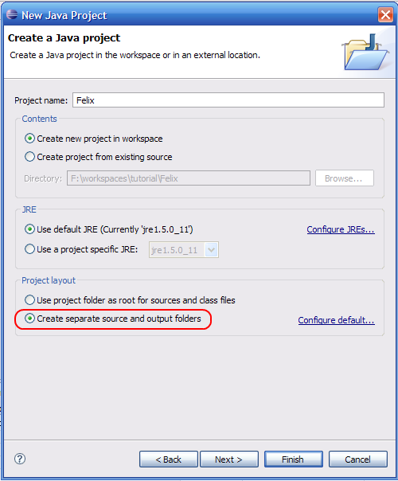
Figure 3: Configuration of the Felix project
On this new wizard page, you need only to change the default output folder (Felix/bin) to another (classes for example, as presented on Figure 4).
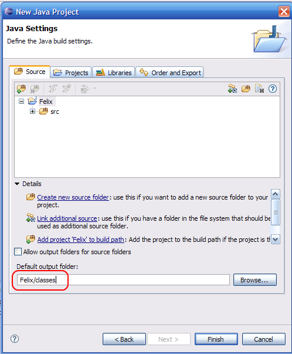
Figure 4: Change the "Default output folder"
After that, click on the "Finish" button. You need to see the following structure (Figure 5). Check that the bin folder appears.
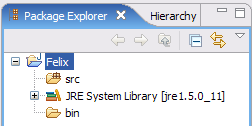
Figure 5: Our new Java Project
Copying Felix inside the created project
Now, remember where you uncompress the Felix release, or where is the Felix main project. Move these files inside the created project. Override the bin folder when asked.
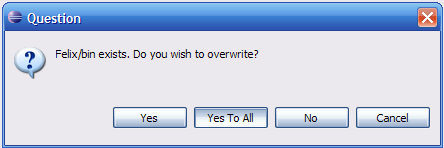
Figure 6: Overwrite the "bin" folder
Once copied, refresh the project. You should see something as presented on the Figure 7.
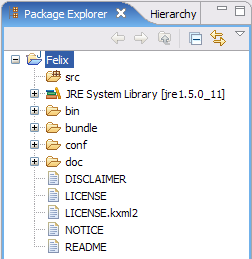
Figure 7: The Felix project after the copy
Preparing the Felix project
The Felix main jar is bin/Felix.jar. So, we need to add this jar in the project build path as presented on Figure 8. Right-click on the felix.jar file and then choose Build Path -> Add to Build Path.
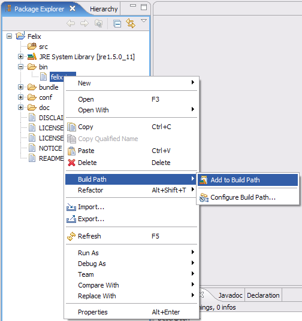
Figure 8: Add the felix.jar file to the project build path
Run Felix
Create a Run configuration
Now, the Felix project is ready. But, we need to configure a Runconfiguration to launch Felix. To achieve this, right-click on the Felix project and select Run As -> Run... (Figure 9)
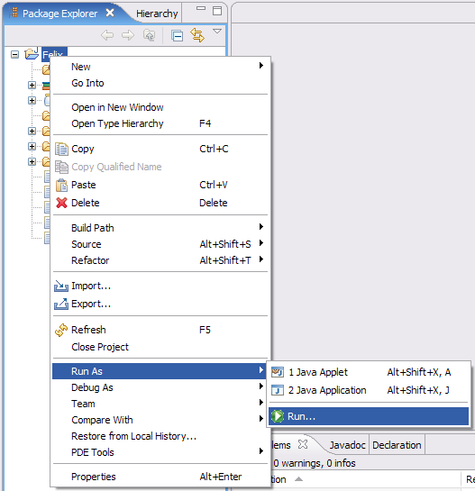
Figure 9: Create a Run configuration to launch Felix
This action launch the Run configuration windows. Create a new Java Application (Right-click on Java Application and select new) (Figure 10)
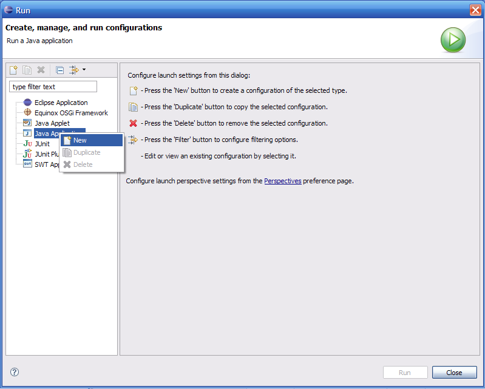
Figure 10: Create a new Java Application
On the configuration wizard, enter a configuration name. Afterward, check the project name (it should be Felix if you choose Felix as project name). Then, Tick the "Include libraries when searching for a main class" option. You should obtain something as presented on the Figure 11.
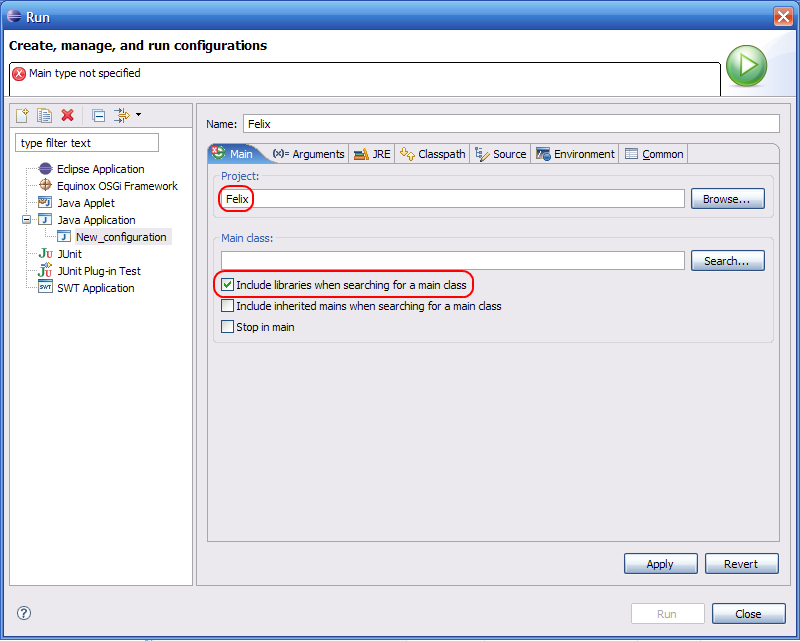
Figure 11: Felix run configuration
Next, click on the "Search" button. Enter "Main" in the text area. In the resulting list, select "Main – org.apache.felix.main". Below the list, you should see: "org.apache.felix.main /Felix/bin/felix.jar". The resulting windows must be similar as the Figure 11.
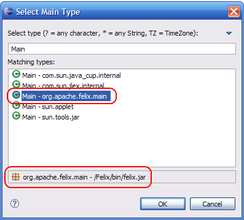
Figure 12: Choose to "good" main class
At that moment, clicks on the "Ok" button. You come back to the Run configuration windows. Apply the configuration ("Apply" button). And click on the "Run" button (Figure 13).
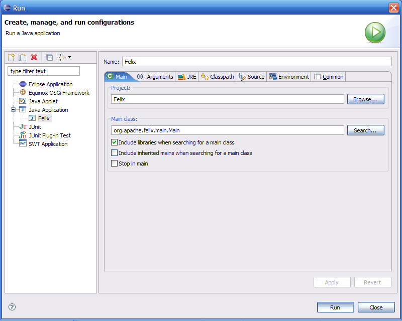
Figure 13: The Felix run configuration can be launched
Note: Newest Felix versions require to set the felix.config.properties property. To achieve this, go in the 'arguments' tab and add the following VM arguments:
-Dfelix.config.properties=file:conf/config.properties
First Execution
Once launched, you should see in the Eclipse console view:
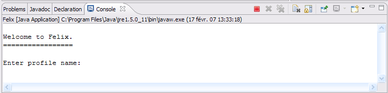
Figure 14: Endly Felix inside Eclipse!
You can use the console as the "normal" Felix console. In fact it is the normal Felix console in color. Enter a profile name as "integration_test" and then use the console normally (Figure 15).
To stop Felix, either type shutdown in the console, either clicks on the red square ("terminate") in the console toolbar.
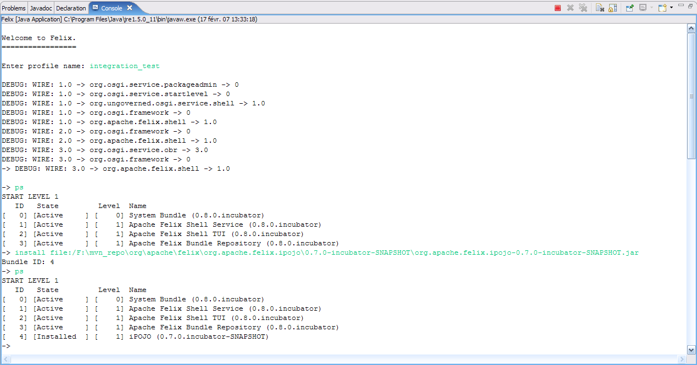
Figure 15: Use the Felix console normally
Re-launching Felix
Once the run configuration for Felix is created (and launched a first time), you can launch Felix directly by clicking on the Run icon and by choosing Felix (Figure 16). Moreover, you can use Eclipse debugging features by launching Felix in debug mode. To achieve this, click on the debug icon and then choose Felix (Figure 17).
Note: You can launch Felix in profiling mode too, if you have installed TPTP.
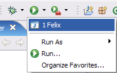
Figure 16: Launching directly Felix from the icon bar
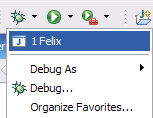
Figure 17: Launch Felix in debug mode
Felix Configuration
Obviously, you can modify the Felix configuration. The Felix configuration file is in the conf folder (config.properties). This section presents briefly two modifications. To go further, look at the Felix documentation.
Configure the Felix cache location
Felix store profiles and deployed bundle inside a cache. Normally this cache is located at_$user_home/.felix._ It is possible to change this location in order to clean it quickly.
Open the configuration file. Then, add a new line with felix.cache.dir=cache (Figure 18). Now, when you will start Felix, it will create a newcache folder (in your project)(Figure 19). All profiles will be stored in. To clean your cache, just delete the cache directory.
Note: refresh your project; else the folder does not appear.
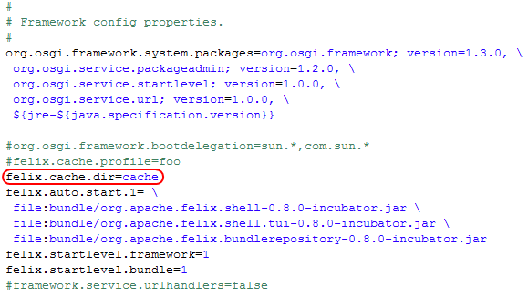
Figure 18: Customize the Felix cache location
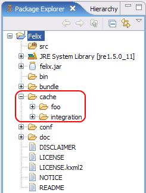
Figure 19: The Felix cache inside your project
Add auto-started bundles
Often, you want that Felix deploy automatically some bundles. By modifying the felix.auto.start.1 (or 2), it is possible to configure which bundle will be deployed at startup.
To achieve this, open the configuration file and add your needed bundle path to the felix.auto.start.1 property (Figure 20). Be careful to the / in your path, to the \ at the end of the line, and to leave a space to the beginning of a new line.
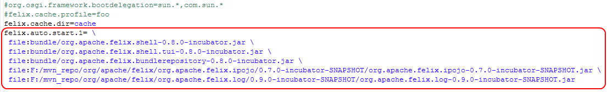
Figure 20: Add auto-started bundles
Debugging bundles
Now that we are able to launch Felix as a Java Application, we can use the debugging and profiling features of Eclipse. To debug bundles, create a new project for your bundle. Then develop your bundle normally. Afterward, compile / package your bundle to obtain the bundle Jar file. You can use Eclipse PDE, Maven, BND, iPOJO, etc... to package your bundle.
To debug, your code, first place a breakpoint inside your code. Launch Felix in debug mode. Then deploy your bundle Jar file. When the execution reaches the breakpoint, Eclipse opens the debug perspective. You can use all debugging features normally.
Conclusion
This document has presented how-to integrate Felix inside Eclipse. For any questions or feedback, subscribe to the Felix users mailing list by sending a message to users-subscribe@felix.apache.org; after subscribing, email questions or feedback to users@felix.apache.org.